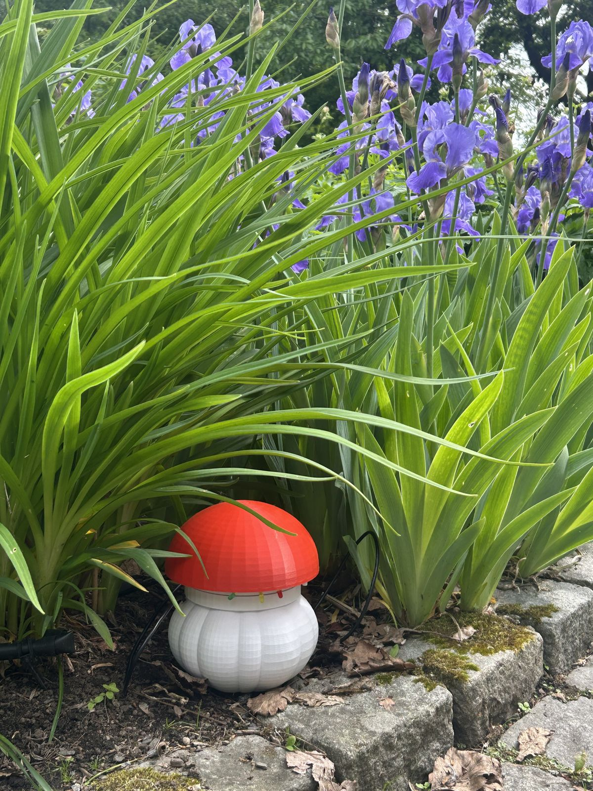
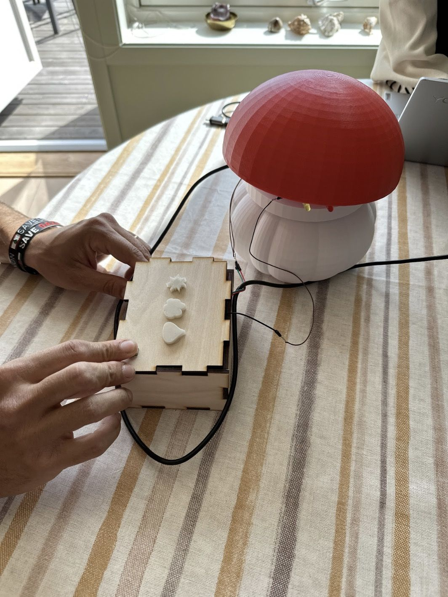

Alexandra Hvile
Jeg studerer informatikk med retning design, bruk og interaksjon ved Universitetet i Oslo. Jeg liker å jobbe der brukerinnsikt og teknologi møtes: å finne ut hva folk faktisk trenger, og så bygge noe som fungerer.
Bakgrunnen min er fra kunst, design og arkitektur på videregående og halvannet år i kundesupport. Nå bygger jeg prototyper med Arduino, skriver Python og designer i Figma.

Prosjekter

Aspire
Hagebrukerne vi snakket med visste ofte ikke når plantene trengte vann. Vi laget et todelt system: en sopp som måler jorda i bedet, og en boks inne som viser svaret med et lys. Jeg hadde ansvar for Arduino-koden og den tekniske løsningen.
Les hele casetPuggis
Under arbeid, eget prosjekt
En webapp for å holde oversikt over studiene. Backenden er skrevet i Python og Flask, og jeg designer nå grensesnittet i Figma før jeg bygger frontenden.
Om meg
Erfaring
- Production Associate, Lima FotoJuli 2026 – nå. Skolekataloger fra bilder til trykkfil i InDesign, med oppfølging i Trello.
- Support Associate, Link MobilityFebruar 2025 – juli 2026. Kundesupport på telefon og e-post i Salesforce og Jira, og oppsett av kontoer under en migrering.
Utdanning
- Bachelor i informatikk: design, bruk og interaksjonUniversitetet i Oslo, 2025 – nå
- Kunst, design og arkitekturLørenskog videregående skole, 2021–2024
Verktøy og språk
- Python
- Flask
- HTML og CSS
- Arduino (C++)
- Figma
- InDesign
- Salesforce
- Jira
- Trello
- Microsoft 365
Metoder
- Brukerintervju
- Observasjon
- Workshop
- Prototyping
- Brukertesting
- Universell utforming (WCAG)
Språk
Norsk og engelsk, flytende muntlig og skriftlig.